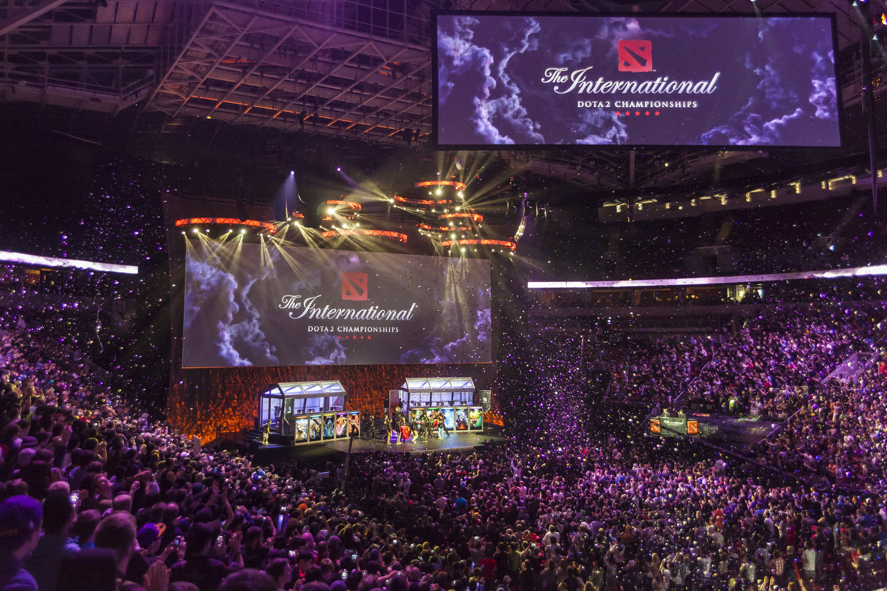
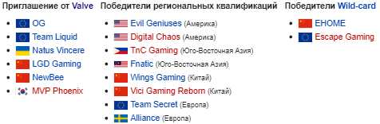

Турнир по игре Dota 2, организованный компанией Valve, который прошёл в Сиэтле в августе 2016 года. Начальный призовой фонд составил 1 600 000 долларов США, а дополнительный сбор с билетов составил более 20 миллионов долларов США. Ежегодный турнир проходил в шестой раз подряд, ввиду чего его название часто сокращалось до аббревиатуры TI-6, и традиционно стал крупнейшим в году соревнованием по Dota 2.
В 2016 году, как и в предыдущих, квалификация была разделена на 4 региона Европа, Америка, Китай, Юго-Восточная Азия. В этом году на региональных квалификациях Европы участвовали не только любительские и полу-профессиональные команды, но и профессиональные такие как Team Secret, Team Spirit, Polarity. На региональных квалификациях Америки участвовала команда Evil Geniuses, которая стала победителем The International 2015. На региональных квалификациях Китая участвовали профессиональные команды EHOME, Vici Gaming.
